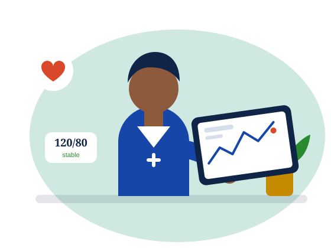

Before: paper follow-up cards
Patients travel to the clinic just to have a number written on a card. Cards get lost, and nobody sees a worsening reading until the next visit.
The platform lets discharged patients of Pharmacy City Health Center log their blood pressure, heart rate, temperature and blood sugar from a phone. Clinicians see every reading as it arrives and are alerted the moment one looks unsafe.
Built for outpatients in Nakawa Division, Kampala at Pharmacy City Health Center. Works on any smartphone browser.

Patients travel to the clinic just to have a number written on a card. Cards get lost, and nobody sees a worsening reading until the next visit.
Readings are saved to a central database in seconds. Unsafe values raise an alert on the clinician dashboard, so help can start the same day.
Big number fields and a live safety check tell patients how a reading looks before they save it.
A daily medicine list with one-tap “taken” checks and a progress ring.
Send a symptom update to your assigned clinician and read their reply in the same place.
Urgent patients rise to the top. The dashboard refreshes every 10 seconds without reloading.
Targeting outpatient department focusiny on General internal Medicine and Chronic Disease Clinicsto eliminate paper-based follow-up cards.
Enters today’s readings and any symptoms.
Compares each value with clinician-set safe limits.
Unsafe readings appear on the dashboard and in the alerts feed.
The clinician replies, adjusts treatment, or invites the patient in.
Use the demo logins on the log-in page to explore the patient app and the clinician dashboard.